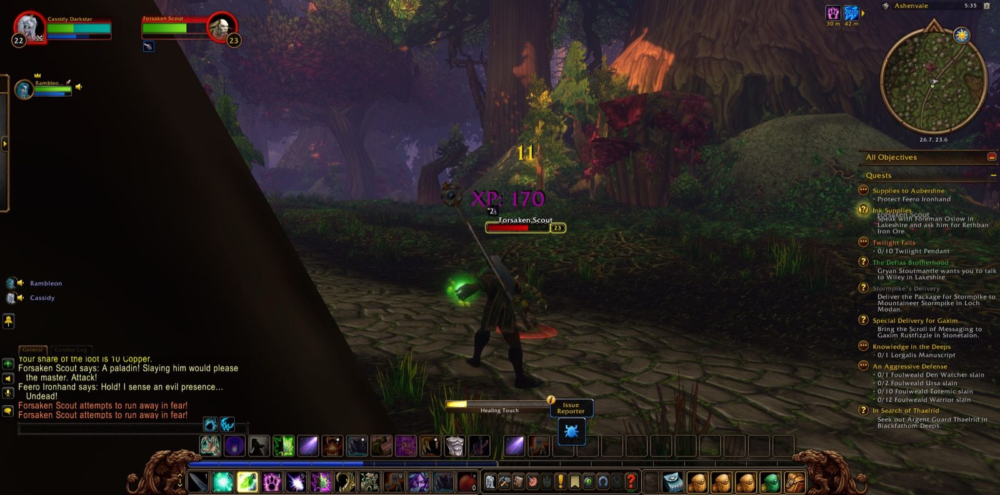
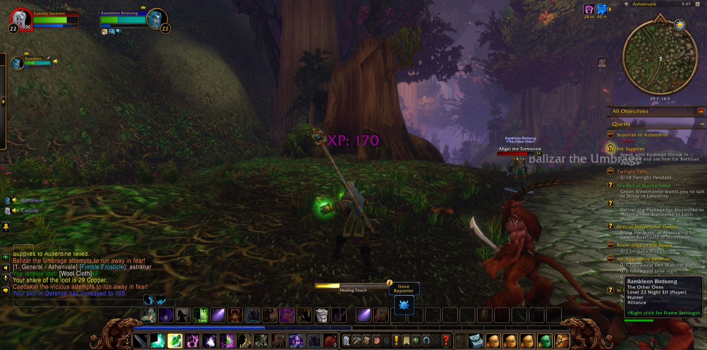

Cassidy Darkstar went out from Darnassus and came to Nighthaven in Moonglade, and he paused there to take a picture as he arrived. In Nighthaven he took up the errand called the Trial of the Lake. It led him by Lake Elune'ara to the Shrine of Remulos, and there he saw it through. After it came the Trial of the Sea Lion, and then the matter of the Great Cat Spirit. For that he went down into the Stormrage Barrow Dens and recovered three relics: the Relic of the Silent Shadow, the Relic of the Fang and the Relic of the Claw. He brought them back, received the Blessings of the Great Cat Spirit in Nighthaven, and was bidden onward with an errand named simply To Darnassus.


That road was long and roundabout. It touched briefly on Timbermaw Hold in Felwood, and in Moonglade he fell once, though he did not stay fallen. From there it ran through Astranaar and Maestra's Post in Ashenvale, then north along Darkshore by Twilight Shore, The Long Wash and Auberdine. He crossed The Veiled Sea to Rut'theran Village and climbed to the Cenarion Enclave in Darnassus, where the errand was done. Then he went back over the water to Auberdine and rested a while.


When he set out again, a ship carried him to Stormwind Harbor. In The Canals of Stormwind City he joined company with Rambleon, a Hunter, who travelled at his side from then on through every road that followed. Together they passed the Trade District and the Valley of Heroes, then Goldshire, and came to Northshire Valley. In the Library Wing of the Main Hall the errand of Brother Paxton was finished, and Ink Supplies was taken up in its place. From there they went to Ashenvale again, by The Shrine of Aessina to Maestra's Post, where Cassidy agreed to carry Supplies to Auberdine. On the road north they fought Dark Strand Assassins and Forsaken Scouts. They also overcame three foes whose names were worth remembering: Balizar the Umbrage, Caedakar the Vicious and Aligar the Tormentor. At The Master's Glaive in Twilight Vale they put down Twilight Thugs and Twilight Disciples, and they passed Remtravel's Excavation.


After that the companions turned to The Zoram Strand, where they faced Wrathtail Sorceresses and Wave Riders, the Mystlash Hydra and the Spined Crawler. Then they went down into Blackfathom Deeps, past Murkshallow Snapclaws and Blindlight Murlocs, as far as The Drowned Sacellum. Cassidy took many pictures along that descent. He came back by Wildbend River to Auberdine and sailed across the sea to Menethil Harbor in the Wetlands. There many asked for his help. He took up Claws from the Deep, Young Crocolisk Skins, Bloom of the Heavens, In Search of the Excavation Team, Digging Through the Ooze, The Third Fleet, The Greenwarden and Alchemical Hazards, and in Menethil Keep he took up Spoils of War. He also finished the old matter of Unrequited Love. Then he went out into Menethil Bay and Black Channel Marsh and hunted the young crocolisks of the Wetlands until many skins were won. His last steps took him toward Bluegill Marsh, and the road ran on from there into the wet country.



